D19 · Skirmish defeat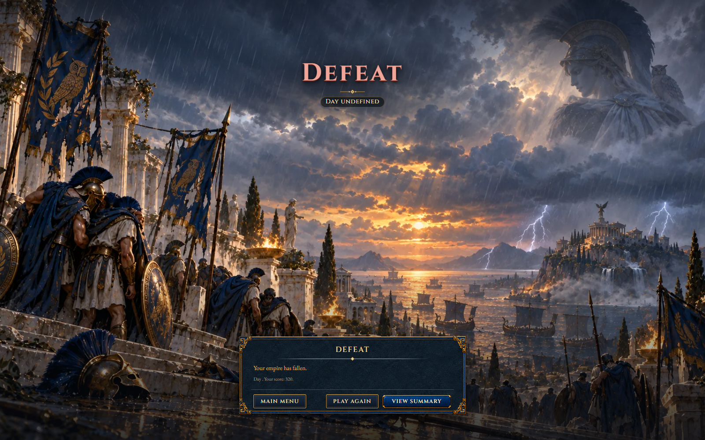
E01 · New map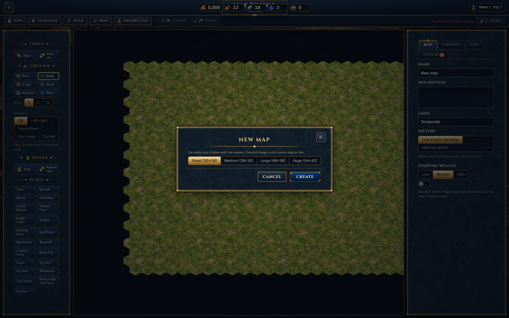
E02 · Generate map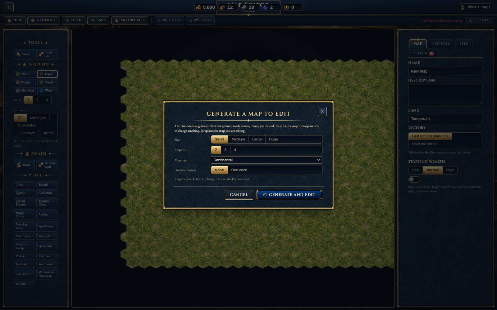
E03 · Open map library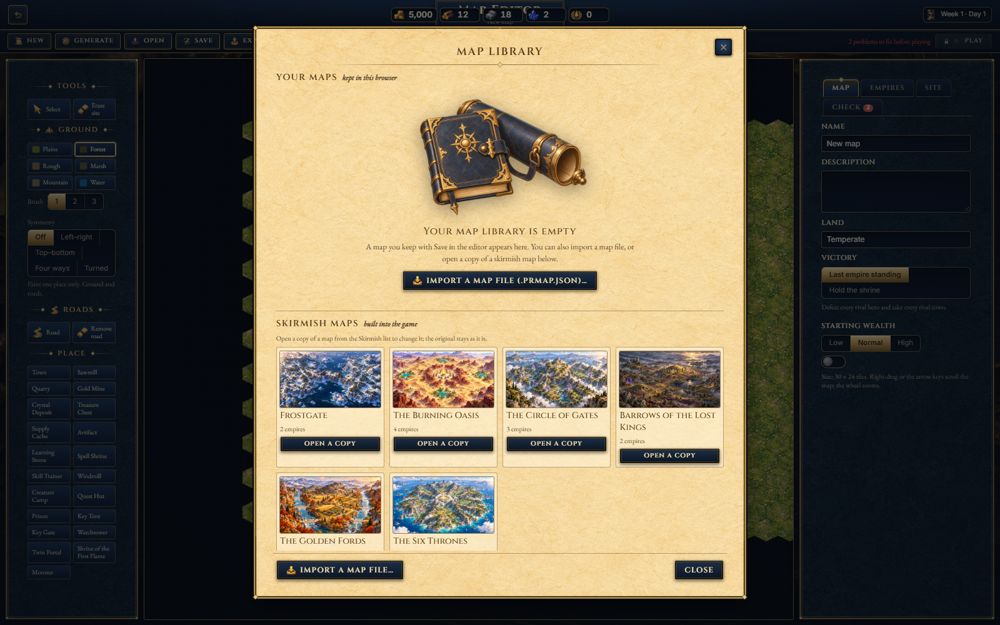
E04 · Play editor map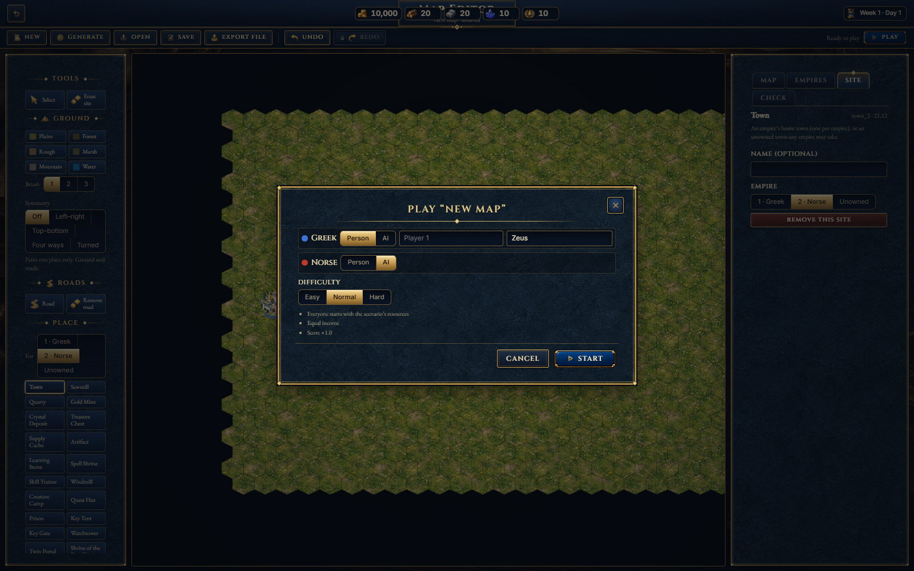
E05 · Leave unsaved map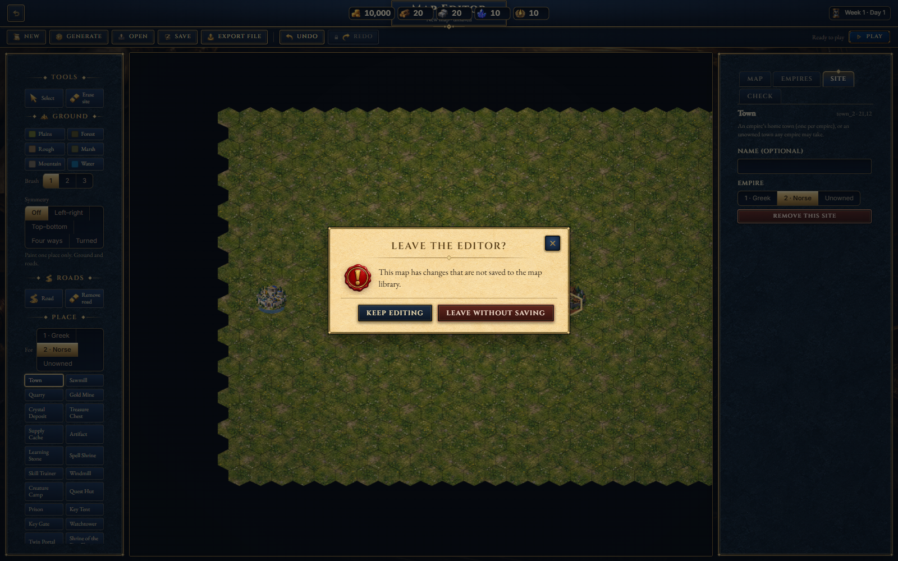
H01 · Artifact detail and comparison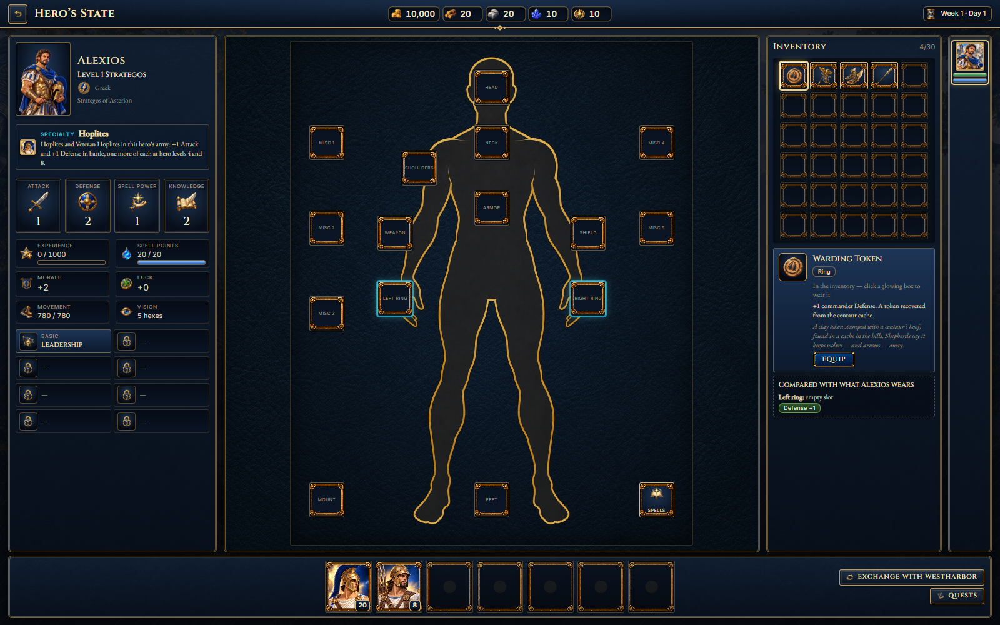
H02 · Army splitting controls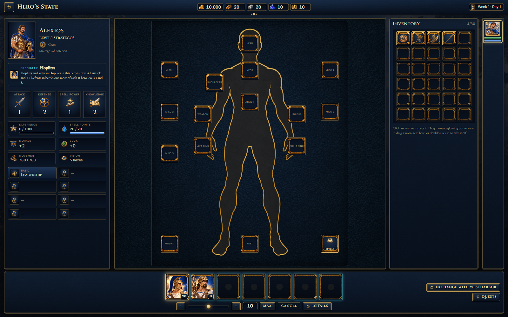
M01 · New week announcement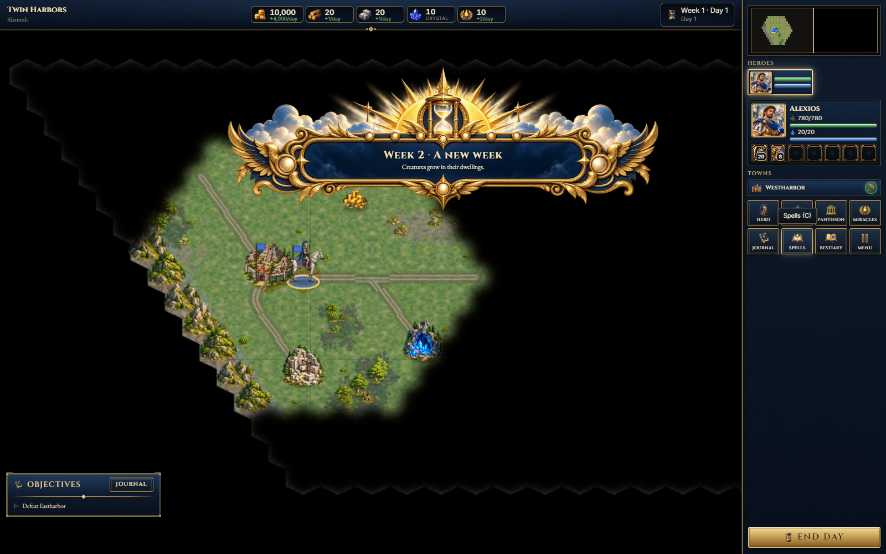
M02 · Divine miracle announcement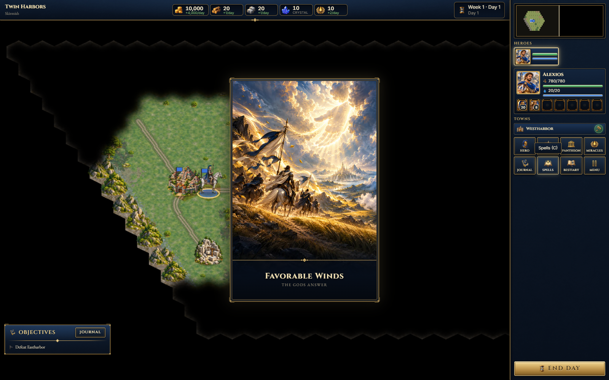
N01 · Notification toast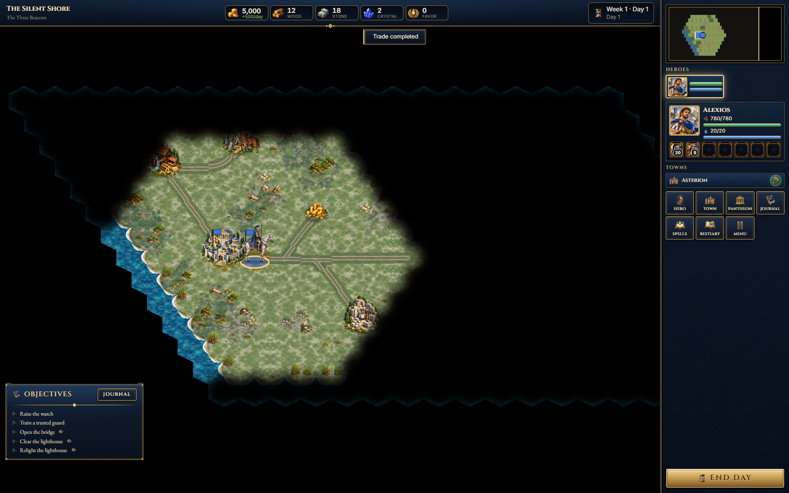
N02 · Rival turn summary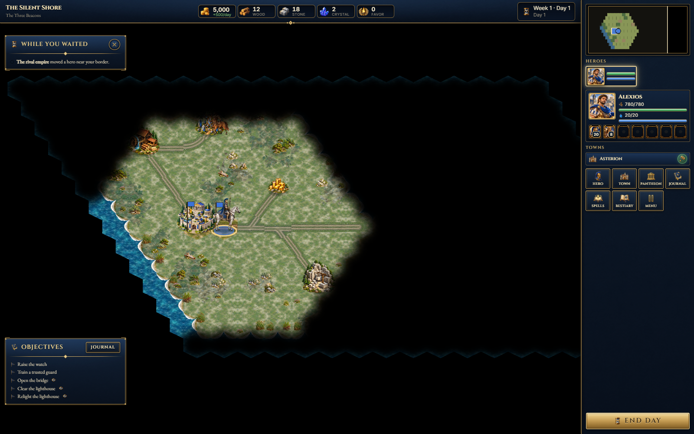